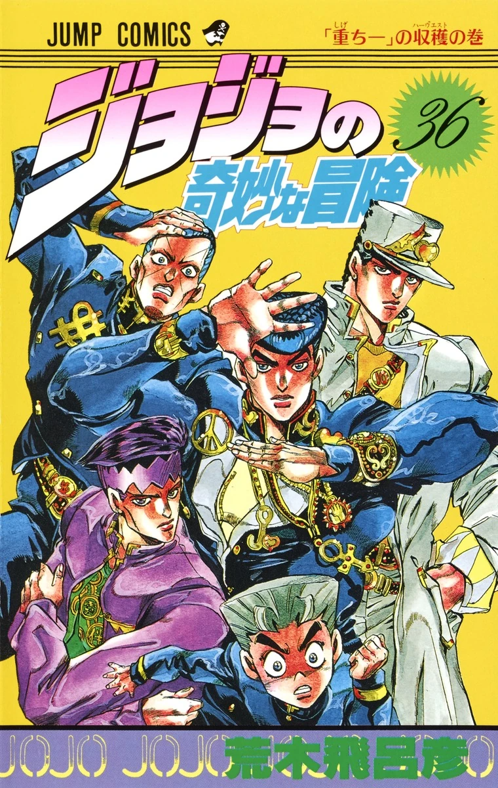

A parte 4 de JoJo’s Bizarre Adventure, chamada “Diamond is Unbreakable”, se passa na cidade japonesa fictícia de Morioh e acompanha principalmente Josuke Higashikata, um estudante do ensino médio que possui um Stand extremamente poderoso chamado Crazy Diamond, capaz de restaurar objetos e curar pessoas — embora não consiga curar a si mesmo. A trama começa como uma série de encontros estranhos com usuários de Stand na cidade, mas aos poucos fica claro que existe uma ameaça escondida por trás desses eventos. Josuke e seus aliados — como Koichi Hirose e Okuyasu Nijimura — acabam descobrindo que há um assassino em série agindo em Morioh há anos, alguém que vive uma vida aparentemente normal, mas esconde uma identidade perigosa. Esse vilão é Yoshikage Kira, um homem obsessivo por uma vida tranquila e “sem problemas”, mas que, na verdade, comete assassinatos brutais movidos por uma fixação perturbadora com mãos femininas. A jornada dos protagonistas não é direta: eles vão reunindo pistas aos poucos, enfrentando usuários de Stand enviados por Kira e desvendando seus métodos de ocultação de identidade. A tensão aumenta quando Kira consegue mudar de aparência e assumir outra identidade, dificultando ainda mais sua captura. A batalha final se torna uma perseguição intensa pela cidade, onde estratégia e uso criativo dos Stands são essenciais. No confronto decisivo, Josuke e seus aliados conseguem finalmente encurralar Kira, encerrando sua ameaça e restaurando a paz em Morioh — embora com o típico tom de estranheza e cotidiano peculiar que define essa parte da obra. No geral, essa temporada se destaca por ter um clima mais urbano e “slice of life” misturado com suspense, focando menos em viagens e mais em uma cidade cheia de segredos, onde o perigo pode estar escondido em qualquer esquina.